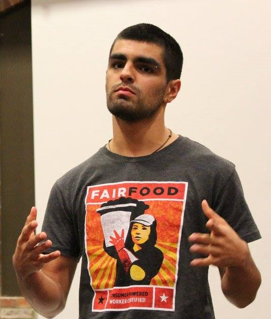

|  | Daniel Cooper Bermudez (23 años) es de espíritu viejo y vital, con la lentitud de una tortuga marina que puede navegar el flow de una corriente. trabaja con Resistencia Popular, una organización cuya misión es concientizar al público de la necesidad de crear un cambio social para poder proteger al medio ambiente y los derechos humanos de todos y todas. También ha trabajado con la Coalición de Trabajadores de Immokalee, una organización de derechos humanos de los trabajadores agrícolas liderado por los trabajadores. Daniel aspira a ser webmaster para así poder desarrollar páginas web y aplicaciones. Él es del proceso y de por medio politólogo. |